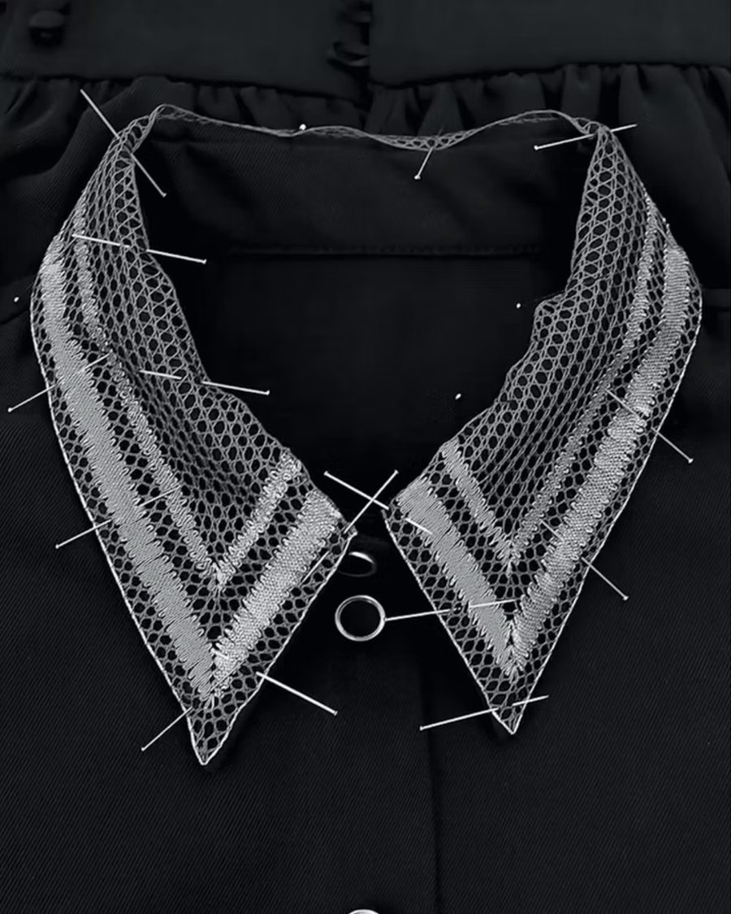

Craftsmanship
From the very beginning, the focus on traditional couture and craftsmanship has been a primary focus when creating each piece. It is this reflection and an appreciation for craft that is reinterpreted with each idea step-by-step. A slow transformation is formed into tangible pieces by hand while bringing new life into ancient techniques that can be cherished and worn for years. Each piece is specially crafted from only the finest natural fabrics such as silk and combine the inspiration of traditional weaving and crochet techniques.
With a meticulous attention to detail, each piece blends the softness of tailoring with a muted coloured palette that is familiarised by the brands contemporary resonance on luxury ready-to-wear and custom-made clothing.
